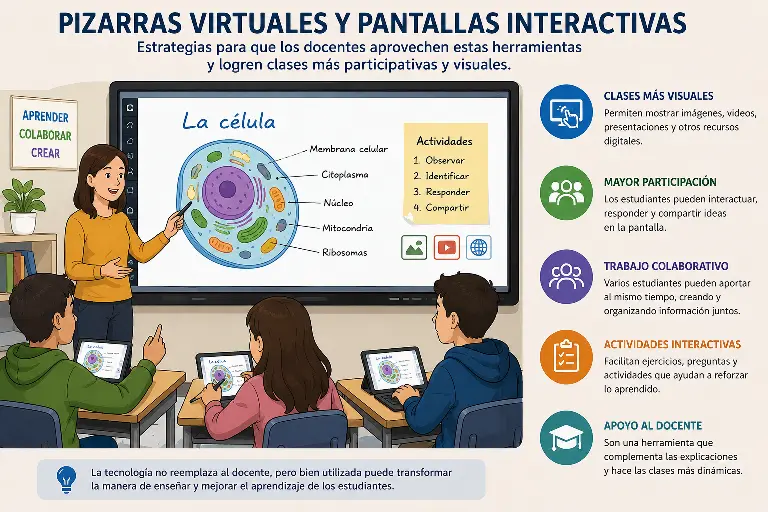

Pizarras virtuales y pantallas interactivas
Las pizarras virtuales y las pantallas interactivas son herramientas tecnológicas que han cambiado la manera de desarrollar algunas clases. A diferencia de una pizarra tradicional, permiten mostrar imágenes, videos, textos, presentaciones y diferentes recursos digitales en un mismo espacio. Estas herramientas pueden hacer que las explicaciones sean más dinámicas y fáciles de seguir, especialmente cuando el tema necesita ejemplos visuales.
Una de las principales ventajas de estas herramientas es que permiten que los docentes presenten la información de diferentes maneras. Por ejemplo, una explicación puede acompañarse con imágenes, esquemas, videos o actividades interactivas. Esto ayuda a que los estudiantes no dependan únicamente de escuchar o copiar información, sino que también puedan observar y participar durante la clase. La tecnología puede convertirse así en un apoyo para complementar las explicaciones del profesor.
Las pantallas interactivas también permiten una mayor participación de los estudiantes. En algunas actividades pueden escribir, señalar elementos, resolver ejercicios o compartir sus respuestas directamente en la pantalla. De esta manera, la clase puede convertirse en un espacio más participativo, donde los estudiantes tienen la oportunidad de intervenir y demostrar lo que han aprendido.
Otra posibilidad importante es el trabajo colaborativo. Algunas pizarras virtuales permiten que varias personas aporten ideas al mismo tiempo, agregando textos, dibujos, imágenes o notas. Esto resulta útil para realizar lluvias de ideas, organizar información o desarrollar trabajos en grupo. Herramientas de este tipo han sido utilizadas para crear espacios donde docentes y estudiantes pueden colaborar en tiempo real.
Para aprovechar correctamente estas herramientas, el docente debe planear las actividades antes de utilizarlas. No se trata simplemente de reemplazar la pizarra tradicional por una pantalla, sino de utilizar las funciones digitales cuando realmente aporten algo a la clase. Una presentación demasiado cargada de información puede terminar siendo difícil de entender, por lo que es importante combinar explicaciones, imágenes, ejercicios y momentos de participación.
También es importante tener en cuenta que no todos los estudiantes tienen las mismas necesidades ni las mismas posibilidades de acceso a la tecnología. Por eso, el uso de herramientas digitales debe buscar la inclusión y no convertirse en una dificultad para quienes tienen problemas de conectividad o necesitan recursos de accesibilidad. UNESCO señala que la tecnología educativa debe utilizarse de manera equitativa y centrada en las necesidades de los estudiantes.
Además de facilitar las explicaciones, las pizarras virtuales pueden servir para repasar contenidos y comprobar lo aprendido. El profesor puede preparar preguntas, ejercicios o pequeñas actividades para que los estudiantes participen durante la clase. Esto permite identificar de una manera rápida qué temas han sido comprendidos y cuáles necesitan una explicación adicional.
En conclusión, las pizarras virtuales y las pantallas interactivas pueden ser herramientas muy útiles para mejorar las clases cuando se utilizan de manera adecuada. Su mayor beneficio está en que permiten combinar diferentes recursos y crear espacios donde los estudiantes puedan observar, participar y colaborar. Sin embargo, la tecnología por sí sola no garantiza una mejor educación; es necesario que exista una buena planificación por parte del docente y que su utilización tenga como objetivo facilitar el aprendizaje.
